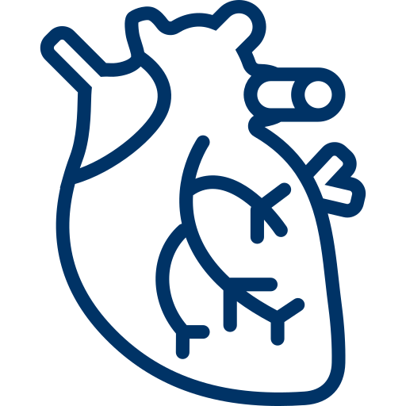

Health Care Services
We Care About Your Health
WELCOME TO WECARE HOSPITAL
WeCare, a public charitable trust is pioneer in providing high quality healthcare service since 1978 in South Gujarat. The mission of the trust and the hospital is to provide high quality treatment at competitive pricing and liberal charity.
We are the oldest, time tested and biggest Healthcare Institutions in South Gujarat. WeCare hospital has best infrastructure, equipments, specialists and trained staff in South Gujarat. The vision of the trust is far reaching with well intentioned management.
Vision : To serve mankind irrespective of caste, creed, religion or economic status by providing organized quality health care.
Mission : To provide quality health care services to patients of all social & financial status by superspecialists in multiple fields at very economical & subsidized rates, accessible to everyone, pioneer in high risk patient care that qualifies us as a tertiary referral center.
OBJECTIVE : To provide very comprehensive medical care in a timely manner to all patients by very competent specialist in that field, best in Surat, 24 hours a day & 7days in a week.
This hospital is designated as tertiary referral center for trauma patient of all walks of life only because of our objective of having the best General surgeons, Ortho Surgeons, Neuro Surgeons available at all times to deal with any or all emergencies.
OUR OUTSTANDING SERVICES
What We Offer!
- ICU
-
 CSSD
CSSD - PHARMACY
-
 DAILYSIS
DAILYSIS - CT SCAN
-
 CATH LAB
CATH LAB
Our Department
-  CARDIOLOGY
-
 DENTAL
DENTAL - EAR NOSE THROAT
-
 GASTROENTROLOGY
GASTROENTROLOGY - GYNAECOLOGY
- NUEROSCIENCES
- OPTHALMOLOGY
-
 ORTHOPAEDICS
ORTHOPAEDICS
about us
Best Medical & Health care Needs to Our Patients
WeCAre society focuses to take Charity Initiatives for the poor and helpless people. The motto is to strengthen poor and marginalised people in their struggle for health through various initiatives in their organisation. Charity rights lie with the trustee’s and they are redeemed only to genuinely poor patients.
Few generous initiatives carried under his trust are like -- 65% of total dialysis done are free of cost.